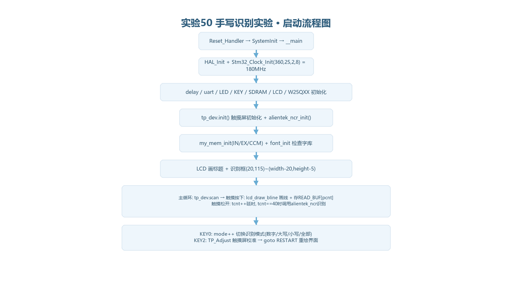
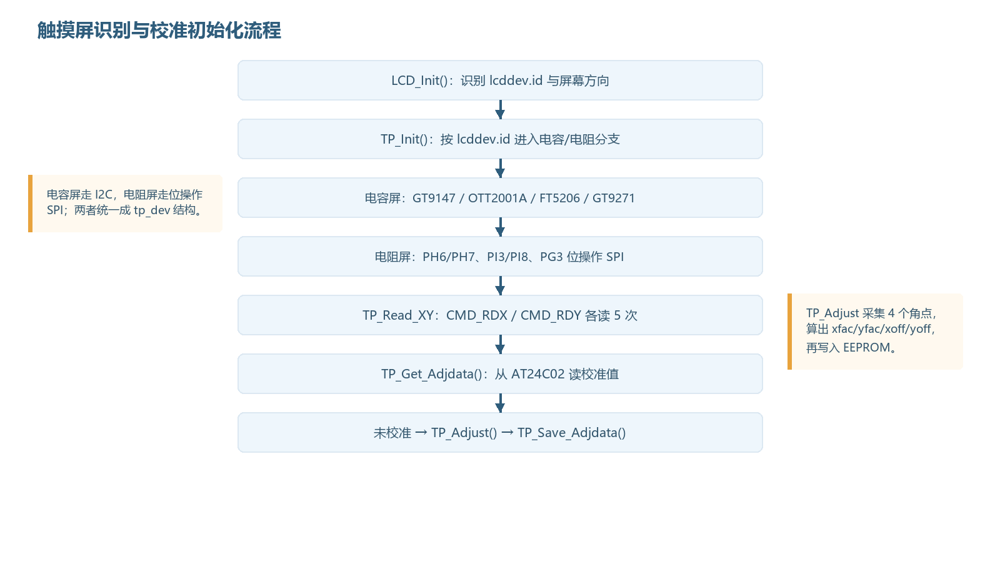
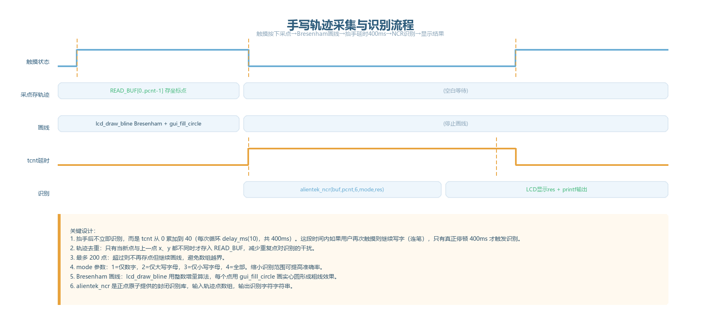
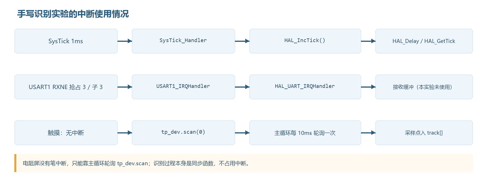

01 工程概述与硬件资源
把触摸屏上的手写轨迹采样成点阵，交给 ATKNCR 库识别成数字或字母
实验50 的输入不再是按键，而是手指在屏幕上的连续轨迹。程序边画边记录坐标，松手约 400ms 后调用 alientek_ncr()，把最多 200 个轨迹点送进识别库，输出数字、大写字母、小写字母或混合识别的结果。
| 资源 | 配置 | 用途 |
|---|---|---|
| LCD | RGB565，800×480 | 手写区、提示文字、识别结果 |
| 触摸屏 | 电阻屏（位操作 SPI）或电容屏（I2C） | 采集 x/y 坐标 |
| AT24C02 | I2C，地址 40 起 13 字节 | 保存触摸校准参数 |
| ATKNCR | ATKNCR_M_V2.0.lib（动态内存版） | 数字/字母识别 |
| KEY0 | PE4 | 切换识别模式 1~4 |
| KEY2 | PE3 | 电阻屏重新校准 |
| USART1 | 115200-8-N-1 | 打印总点数与识别结果 |
READ_BUF[200]
atk_ncr_point 4 字节
最多 6 个候选
4 种识别模式
松手 400ms 识别
三个参与识别的要素
- 轨迹点：只保留 x、y 都发生变化的点，避免原地抖动占满 200 个名额。
- 模式：1 数字、2 大写、3 小写、4 混合；模式越窄，识别越稳。
- 候选数：
charnum=6，结果缓冲区至少 7 字节，工程里给了 10 字节。
识别库不依赖字库，但界面中文提示依赖 SPI FLASH 里的字库；字库缺失时先看到 “Font Error!”。
02 启动流程总览
触摸初始化必须排在 LCD 之后，因为触摸驱动要靠 lcddev.id 判断屏幕型号
int main(void)
{
u8 i=0,tcnt=0,res[10],key;
u16 pcnt=0;
u8 mode=4; // 默认混合识别
u16 lastpos[2]; // 上一个轨迹点
HAL_Init(); // 1ms 时基
Stm32_Clock_Init(360,25,2,8); // 180MHz
delay_init(180);
uart_init(115200);
LED_Init();
KEY_Init();
SDRAM_Init(); // 显存
LCD_Init(); // 先确定 lcddev.id
W25QXX_Init(); // 字库
tp_dev.init(); // 触摸初始化，依赖 lcddev.id
my_mem_init(SRAMIN); // 识别库用内部 SRAM 池
my_mem_init(SRAMEX);
my_mem_init(SRAMCCM);
alientek_ncr_init(); // 必须在内存池之后
while(font_init()) // 字库检查
{
LCD_ShowString(60,50,200,16,16,"Font Error!");
delay_ms(200);
LCD_Fill(60,50,240,66,WHITE);
}
RESTART:
/* 绘制标题、手写区边框与模式提示 */
}
初始化顺序的两个硬约束
tp_dev.init()内部读lcddev.id判断 4.3 寸、7 寸或 RGB 屏，所以 LCD 必须已初始化。alientek_ncr_init()会从SRAMIN池申请内存，必须在my_mem_init(SRAMIN)之后。- 字库检查放在最后，避免中文界面显示为空白时误判为触摸故障。
原工程在
RESTART 标签前连续写了两次 tcnt=100，属于冗余赋值，不影响逻辑。03 状态交互演示
先看启动链路，再点按钮切换识别模式，观察候选范围如何变化

识别模式与校准演示（对应 KEY0 / KEY2）
笔按下
识别库就绪
模式 4：全部识别 轨迹点 0/200 等待手写
演示与源码的对应关系
- KEY0：
mode++，超过 4 回到 1，并清空当前手写区。 - KEY2：仅电阻屏（
touchtype&0X80==0）有效，调用TP_Adjust()后跳回 RESTART。 - 模式提示会显示“仅识别数字 / 大写 / 小写 / 全部识别”。
演示中的轨迹点计数是示意值；真实点数由
pcnt 累计，超过 200 后不再记录。04 启动文件与复位入口
识别库是一个静态库，启动流程仍然是标准的 Reset_Handler → SystemInit → main
Stack_Size EQU 0x800; // 2KB 栈 AREA STACK, NOINIT, READWRITE, ALIGN=3 Stack_Mem SPACE Stack_Size __initial_sp Heap_Size EQU 0x200; // 512B 堆，识别库主要用内存池 AREA HEAP, NOINIT, READWRITE, ALIGN=3 __heap_base Heap_Mem SPACE Heap_Size __heap_limit Reset_Handler PROC EXPORT Reset_Handler [WEAK] IMPORT SystemInit IMPORT __main LDR R0, =SystemInit BLX R0 // FPU 与时钟复位 LDR R0, =__main BX R0 // C 库入口 ENDP
堆与内存池的区别
- 启动文件的 Heap 只有 512B，主要给 C 库的 malloc 用。
- 识别库通过
alientek_ncr_malloc()调用mymalloc(SRAMIN,size)，走的是自己的内存池。 - 所以真正决定识别库能否工作的，是
my_mem_init(SRAMIN)，不是 Heap_Size。
若把
alientek_ncr_malloc 改成标准 malloc，512B 堆很快就不够，表现为识别时死机或返回空结果。05 系统时钟与 HAL 初始化
触摸读取里的 delay_us 依赖 180MHz 下的 fac_us，时钟不对会读错坐标
void SystemInit(void)
{
#if (__FPU_PRESENT == 1) && (__FPU_USED == 1)
SCB->CPACR |= ((3UL << 10*2)|(3UL << 11*2)); // 识别库含浮点运算
#endif
RCC->CR |= (uint32_t)0x00000001;
RCC->CFGR = 0x00000000;
RCC->CR &= (uint32_t)0xFEF6FFFF;
RCC->PLLCFGR = 0x24003010;
RCC->CFGR &= ~RCC_CFGR_SW;
RCC->CIR = 0x00000000;
}
void delay_init(u8 SYSCLK)
{
HAL_SYSTICK_CLKSourceConfig(SYSTICK_CLKSOURCE_HCLK);
fac_us=SYSCLK; // 180 → 1us 计 180 个数
}
TP_Read_AD() 里用 delay_us(6) 等 ADS7846 转换完成，用 delay_us(1) 控制位操作 SPI 的半个时钟。若 delay_init 传入的频率与实际主频不符，这些微秒延时会被拉长或缩短，坐标就会抖动甚至读不出。
时钟与触摸精度的关系
- 位操作 SPI 没有硬件时钟，全靠
delay_us产生时序。 - 180MHz 下 fac_us=180，1us 的误差只有几个周期，足够稳定。
- 若系统跑 168MHz 却仍传 180，延时会偏短，读取可能失败。
HAL_Init 的 SysTick 是 1ms，不用于位操作 SPI；触摸时序用的是 delay_us 的忙等循环。
06 延时、串口与基础驱动
串口只输出两行关键日志：总点数和识别结果
int fputc(int ch, FILE *f)
{
while((USART1->SR&0X40)==0); // 等 TXE
USART1->DR=(u8)ch;
return ch;
}
printf("总点数:%d\r\n",pcnt); // 轨迹点数量
alientek_ncr(READ_BUF,pcnt,6,mode,(char*)res);
printf("识别结果:%s\r\n",res); // 最多 6 个候选
日志能说明什么
- 总点数太少（例如 2~3 点）：说明笔迹被判定为“点”而不是“线”，识别率会低。
- 总点数达到 200：说明缓冲区已满，后面的笔画没有被记录。
- 识别结果为空：模式与书写内容不匹配，或轨迹点顺序异常。
串口没有接收逻辑，识别模式只能用 KEY0 在现场切换，不能从串口下发命令。
07 核心外设初始化：触摸屏与校准
先按屏幕 ID 选驱动，再读校准值；没有校准值就现场采 4 个角点

u8 TP_Init(void)
{
if(lcddev.id==0X5510||lcddev.id==0X4342) // 4.3 寸电容 / RGB 屏
{
if(GT9147_Init()==0) tp_dev.scan=GT9147_Scan;
else { OTT2001A_Init(); tp_dev.scan=OTT2001A_Scan; }
tp_dev.touchtype|=0X80; // 标记电容屏
return 0;
}
else if(lcddev.id==0X1963||lcddev.id==0X7084||lcddev.id==0X7016)
{
FT5206_Init(); tp_dev.scan=FT5206_Scan;
tp_dev.touchtype|=0X80;
return 0;
}
else if(lcddev.id==0X1018)
{
GT9271_Init(); tp_dev.scan=GT9271_Scan;
tp_dev.touchtype|=0X80;
return 0;
}
else // 电阻屏分支
{
/* PH6/PI3/PI8 输出，PH7/PG3 输入 */
TP_Read_XY(&tp_dev.x[0],&tp_dev.y[0]);
AT24CXX_Init();
if(TP_Get_Adjdata())return 0; // 已有校准值
else
{
LCD_Clear(WHITE);
TP_Adjust(); // 四点校准
TP_Save_Adjdata();
}
}
return 1;
}
u16 TP_Read_AD(u8 CMD)
{
u8 count=0;
u16 Num=0;
TCLK=0; TDIN=0; TCS=0; // 选中触摸 IC
TP_Write_Byte(CMD); // 发命令字
delay_us(6); // ADS7846 最长转换时间
TCLK=0; delay_us(1); TCLK=1; // 清 BUSY
delay_us(1); TCLK=0;
for(count=0;count<16;count++) // 读 16 位，只有高 12 位有效
{
Num<<=1;
TCLK=0; delay_us(1); TCLK=1;
if(DOUT)Num++;
}
Num>>=4;
TCS=1;
return Num;
}
校准值存在哪
- AT24C02 的 40~52 字节：xfac、yfac 各 4 字节，xoff、yoff 各 2 字节，touchtype 1 字节。
- xfac/yfac 按 ×100000000 存整数，读取时再除回去。
TP_Adjust()依次在四个角画点，采到后校验对边比例在 0.95~1.05 之间。
每次坐标读取连续采 5 次，排序后去掉 1 个最小值和 1 个最大值，再取平均，降低抖动。
08 时序与数据流
按下时逐点记录，松手后 400ms 才识别，给用户留出“提笔”的停顿

tp_dev.scan(0); // 轮询一次触摸 if(tp_dev.sta&TP_PRES_DOWN) // 笔按着 { delay_ms(1); // 防止重复判定 tcnt=0; // 松手计时清零 if(lastpos[0]==0XFFFF) // 第一笔 { lastpos[0]=tp_dev.x[0]; lastpos[1]=tp_dev.y[0]; } lcd_draw_bline(lastpos[0],lastpos[1], tp_dev.x[0],tp_dev.y[0],2,BLUE); lastpos[0]=tp_dev.x[0]; lastpos[1]=tp_dev.y[0]; if(pcnt<200) // 最多 200 点 { if((READ_BUF[pcnt-1].y!=tp_dev.y[0])&& (READ_BUF[pcnt-1].x!=tp_dev.x[0])) { READ_BUF[pcnt].x=tp_dev.x[0]; READ_BUF[pcnt].y=tp_dev.y[0]; pcnt++; } } } else // 笔抬起 { lastpos[0]=0XFFFF; tcnt++; delay_ms(10); i++; if(tcnt==40) // 约 400ms { if(pcnt) { printf("总点数:%d\r\n",pcnt); alientek_ncr(READ_BUF,pcnt,6,mode,(char*)res); printf("识别结果:%s\r\n",res); pcnt=0; LCD_ShowString(60+72,90,200,16,16,res); } LCD_Fill(20,115,lcddev.width-20-1,lcddev.height-5-1,WHITE); } }
400ms 是怎么来的
- 松手分支每轮
delay_ms(10)，tcnt每轮加 1。 tcnt==40即 40 × 10ms = 400ms。- 这 400ms 内如果再次落笔，
tcnt会被清零，不会误识别。
按住时每轮只延时 1ms，是为了让画线跟手；松手后改成 10ms，减少空转并给识别留出稳定窗口。
09 中断链路
触摸是纯轮询，没有笔中断；中断只来自 SysTick 和串口

u8 TP_Scan(u8 tp)
{
if(PEN==0) // 笔按下（低电平有效）
{
if(tp)TP_Read_XY2(&tp_dev.x[0],&tp_dev.y[0]); // 物理坐标
else if(TP_Read_XY2(&tp_dev.x[0],&tp_dev.y[0]))
{
tp_dev.x[0]=tp_dev.xfac*tp_dev.x[0]+tp_dev.xoff; // 转屏幕坐标
tp_dev.y[0]=tp_dev.yfac*tp_dev.y[0]+tp_dev.yoff;
}
if((tp_dev.sta&TP_PRES_DOWN)==0)
{
tp_dev.sta=TP_PRES_DOWN|TP_CATH_PRES;
tp_dev.x[4]=tp_dev.x[0]; // 记录按下点
tp_dev.y[4]=tp_dev.y[0];
}
}
else
{
if(tp_dev.sta&TP_PRES_DOWN)tp_dev.sta&=~(1<<7); // 标记松开
}
return tp_dev.sta&TP_PRES_DOWN;
}
为什么不用中断
- 电阻屏的 PEN 信号会抖动，硬件中断会频繁误触发。
- 主循环本来就要画线，顺带轮询最省事，也不会丢点。
- 电容屏驱动虽然走 I2C，但同样是主动扫描，不依赖中断。
SysTick 只提供 1ms 时基给
HAL_Delay；USART1 中断虽然使能，但主循环不读接收缓冲。10 主循环与现象
屏幕下方是手写区，写完稍等即出结果；KEY0 换模式，KEY2 重新校准
while(1)
{
key=KEY_Scan(0);
if(key==KEY2_PRES&&(tp_dev.touchtype&0X80)==0)
{
TP_Adjust(); // 仅电阻屏可校准
LCD_Clear(WHITE);
goto RESTART; // 重绘界面
}
if(key==KEY0_PRES)
{
LCD_Fill(20,115,219,314,WHITE); // 清手写区
mode++;
if(mode>4)mode=1;
switch(mode)
{
case 1: Show_Str(80,207,200,16,"仅识别数字",16,0); break;
case 2: Show_Str(64,207,200,16,"仅识别大写字母",16,0); break;
case 3: Show_Str(64,207,200,16,"仅识别小写字母",16,0); break;
case 4: Show_Str(88,207,200,16,"全部识别",16,0); break;
}
tcnt=100;
}
tp_dev.scan(0);
/* 按下记录轨迹，松手 400ms 后识别 */
if(i==30)
{
i=0;
LED0=!LED0; // 心跳
}
}
现象对照
- 蓝色粗线跟随手指，线宽由
lcd_draw_bline(...,2,BLUE)决定。 - 抬手约 0.4s 后，手写区清空，“识别结果”右侧出现字符。
- KEY0 切换模式时，手写区中部提示文字同步变化。
- KEY2 在校准界面依次点四个角，成功后自动回到主界面。
写得太快或笔画太短时，采样点可能不足以描述形状；放慢速度、加大笔画更容易识别。
11 核心数据结构与算法
轨迹是 4 字节一个点，识别库只关心点的顺序与坐标范围
__packed typedef struct _atk_ncr_point
{
short x; // x 轴坐标
short y; // y 轴坐标
}atk_ncr_point; // 紧凑结构，共 4 字节
atk_ncr_point READ_BUF[200]; // 最多 200 个轨迹点
void alientek_ncr(atk_ncr_point *track,int potnum,
int charnum,unsigned char mode,char *result);
// 调用：点数组、点数、候选数 6、模式 1~4、结果缓冲
alientek_ncr(READ_BUF,pcnt,6,mode,(char*)res);
void gui_fill_circle(u16 x0,u16 y0,u16 r,u16 color)
{
u32 i;
u32 imax=((u32)r*707)/1000+1; // √2/2 近似
u32 sqmax=(u32)r*(u32)r+(u32)r/2;
u32 x=r;
gui_draw_hline(x0-r,y0,2*r,color);
for(i=1;i<=imax;i++)
{
if((i*i+x*x)>sqmax)
{
if(x>imax)
{
gui_draw_hline(x0-i+1,y0+x,2*(i-1),color);
gui_draw_hline(x0-i+1,y0-x,2*(i-1),color);
}
x--;
}
gui_draw_hline(x0-x,y0+i,2*x,color);
gui_draw_hline(x0-x,y0-i,2*x,color);
}
}
轨迹记录与画线的约定
- 只有 x 和 y 都变化才记录，避免同一个点重复入数组。
lastpos[0]=0XFFFF是“抬笔”标志，下一笔重新取起点。- 画线用 Bresenham 思路逐点推进，每个点用实心圆加粗，视觉上更连续。
- 识别库要求至少 2 个不同点，单点或空轨迹不调用。
识别库内部会做归一化与特征提取，我们只需要保证点顺序正确、坐标在屏幕范围内。
12 串口调试与日志
每次识别只打印两行，足够判断“点够不够、识别对不对”
if(pcnt)
{
printf("总点数:%d\r\n",pcnt); // 1~200
alientek_ncr(READ_BUF,pcnt,6,mode,(char*)res);
printf("识别结果:%s\r\n",res); // 最多 6 个候选
pcnt=0;
POINT_COLOR=BLUE;
LCD_ShowString(60+72,90,200,16,16,res); // 屏幕同步显示
}
日志与现象的对应
- 总点数正常：说明触摸读取、坐标转换、轨迹记录都工作。
- 总点数偏少：可能手写区外的点被过滤，或
pcnt未累加。 - 识别结果乱码：结果缓冲区太小或
mode越界。
模式 4 的候选范围最大，识别速度略慢；现场演示时先用模式 1 验证数字，再切到模式 4。
13 常见问题与排查
先分清“触摸读不到”和“识别不准”，两者的排查路径完全不同
| 现象 | 最可能原因 | 排查动作 |
|---|---|---|
| 画不出线 | 触摸坐标未校准或 PEN 电平反了 | 按 KEY2 重新校准，检查触摸排线 |
| 线偏移 | xfac/yfac/xoff/yoff 不对 | 清 EEPROM 校准区后重新校准 |
| 总点数一直很少 | 点被“x、y 都变化”条件过滤 | 放慢书写速度 |
| 识别无结果 | 模式与内容不符 | 数字用模式 1，字母用模式 2/3 |
| 识别时死机 | SRAMIN 内存池不足 | 加大 my_mem_init 的池大小 |
| 中文提示空白 | 字库未更新 | 先跑字库更新例程 |
排查顺序
- 先看串口有没有“总点数”，确认触摸链路通。
- 再看点数是否随笔画增长，确认记录逻辑通。
- 最后才调模式与书写方式，判断识别率。
电容屏不需要 TP_Adjust，KEY2 分支会被
touchtype&0X80 挡掉；这是源码里的明确判断。14 小结
从“坐标”到“字符”，中间隔着采样、校准、轨迹压缩和模式匹配
实验50 把触摸屏从“点按钮的输入设备”变成了“手写板”。真正关键的不是识别库本身，而是前面那套工程处理：按屏幕 ID 选驱动、用四点校准把物理坐标映射到屏幕坐标、按“x/y 都变化”压缩轨迹、松手 400ms 后再识别。
| 层次 | 关键函数 / 数据 | 职责 |
|---|---|---|
| 驱动 | TP_Init / TP_Scan | 识别屏型、读坐标、维护按下状态 |
| 校准 | TP_Adjust / TP_Save_Adjdata | 四点校准并写入 AT24C02 |
| 轨迹 | READ_BUF / pcnt / lastpos | 记录并压缩手写点 |
| 识别 | alientek_ncr | 按模式输出最多 6 个候选 |
| 显示 | lcd_draw_bline / Show_Str | 画粗线、显示结果 |
三个结论
- 触摸初始化依赖 LCD 的型号识别，顺序不能反。
- 识别库用 SRAMIN 内存池，池必须在
alientek_ncr_init之前建立。 - 识别触发靠软件计时 400ms，不依赖笔中断。
到这里四个实验串起来：视频播放看“数据流”，FPU 看“算力”，DSP 看“算法库”，手写识别看“人机输入”。